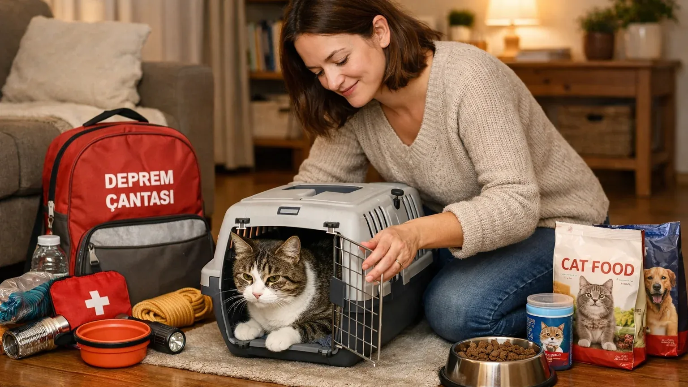

Evcil Hayvanlarla Deprem Planı Nasıl Yapılır?
Türkiye'de 10 milyonun üzerinde evcil hayvan var. Deprem anında onları da korumak, hem onlar için hem de sizin psikolojiniz için kritik. İşte kapsamlı evcil hayvan afet planı.
Taşıma Çantası Hazır Olsun
Her evcil hayvan için bir taşıma kafesi veya çantası olmalı ve görünür yerde bulunmalı. Kedi için sert plastik kafes, küçük köpek için benzer kafes, büyük köpek için tasma + ağızlık. Panik anında hayvanlar sahiplerini tanımayabilir — ağızlık ısırık riskini azaltır.
Evcil Hayvan Deprem Çantası
Ayrı bir çantada: 3 günlük mama (konserve veya kuru, düzenli yenileme), su (hayvan başı 1 litre/gün), kaplar (katlanabilir plastik), yedek tasma ve kayış, veteriner kayıtları (aşı kartı, mikroçip numarası), kişisel fotoğraflar (kaybolursa), ağrı kesici ve sakinleştirici (veteriner önerir), kedi tuvaleti için küçük kum torbası.
Kimlik ve İletişim
Evcil hayvanınızda mutlaka mikroçip olmalı (veterinerden, 200-400 TL). Tasmasında isim + telefon numarası yazan künye. Fotoğraflı "beni evine götür" kartı cüzdanınızda. Mikroçiplenmemiş hayvanlar kaybolduklarında sahip bulmak çok zor.
Deprem Anında Ne Yaparım?
1. Kendi güvenliğinizi önce sağlayın — kendinizi kurtarmadan hayvan kurtarmaya çalışmak tehlikelidir. 2. Sarsıntı sırasında hayvanınızla konuşmayın, acele tutmayın — ısırılabilir. 3. Sarsıntı bitince hayvanı sakin yaklaşımla taşıma kafesine alın. 4. Sert sesli çağırmak yerine sakince konuşun. 5. Tahliye sırasında tasmanız kısa olsun, güvenli mesafede tutun.
Toplanma Alanında Evcil Hayvan
Çoğu toplanma alanı evcil hayvanları kabul eder ama kural farklıdır. AFAD kayıtlı toplanma alanlarında genelde uygundur ama bağlı tutmanız gerekir. Gıda alırken tasmanızı duvara veya ağaca bağlayın. Büyük köpekler için ağızlık takmanızda fayda var — kalabalıkta stresle ısırık olabilir.
Kayıp Hayvan Prosedürü
Deprem sonrası evcil hayvanınız kaçarsa: 1. Evinizden uzaklaşmayın — çoğu hayvan 1-3 gün içinde eve döner. 2. Yakındaki veterinerlere ve belediye sahipsiz hayvan birimine bilgi verin. 3. Sosyal medyada paylaşın — mikroçip numarası olmadan genelde yüzlerce saat sürer.